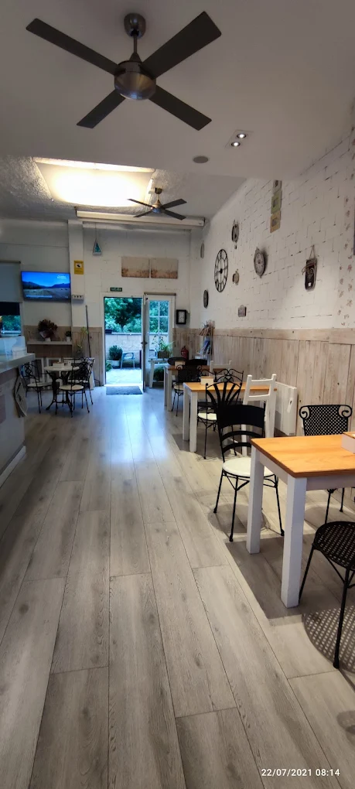
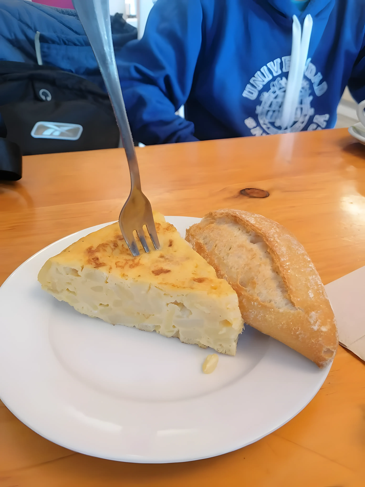
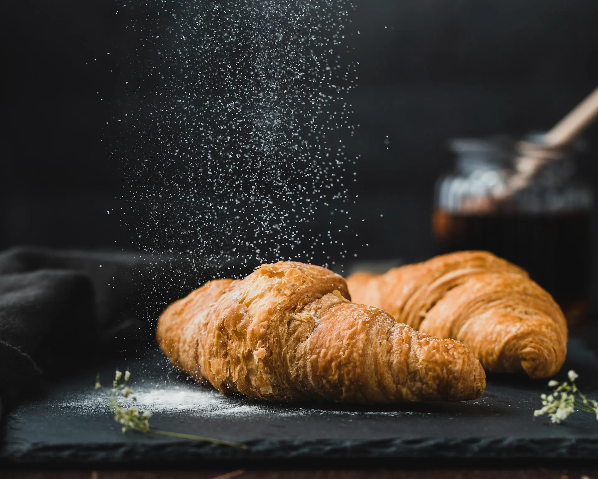

Panadería
Okindegia
Pan recién horneado cada mañana: barras, hogazas y pan de semillas para que tu desayuno cargue baterías.
Okindegia · Gozotegia · Kafetegia — Bera, Navarra
Panadería, pastelería y cafetería con encanto en el corazón de Bera. Cantidades generosas, personal amable y un desayuno que carga las baterías.



Bienvenido a Goxune
En Goxune Okindegia Kafetegia tendrás la oportunidad de probar un delicioso café. Por si todo esto fuera poco, su personal es alegre. El servicio en este lugar se podría catalogar de rápido. Una decoración interesante y su atmósfera acogedora ayudan a sus clientes a sentirse relajados.
Lo que horneamos cada día
Panadería, pastelería, cafetería y bar. Gran variedad de productos, todo recién hecho.
Pan recién horneado cada mañana: barras, hogazas y pan de semillas para que tu desayuno cargue baterías.
Tartas, empanadas, croquetas y repostería casera. Gran variedad de productos dulces y salados.
Un delicioso café Aitona, tostadas con tomate, bocadillos de lomo y la tortilla que tanto gusta.
Pinchos, tapas y buen ambiente. El sitio perfecto para un brunch tranquilo o un alto en el camino.
De la carta
Café con leche en un sitio especial, tostadas, bocadillos y tortilla. Cantidades grandes y muy recomendable para desayunar.




Lo que dicen en Google
Goxune es un sitio querido por locales y viajeros. Estas son palabras de sus clientes.
“Muy bueno, cantidades grandes y super amables. Nos hemos apretado un bocadillo de lomo y pimientos y uno de tortilla-queso. Muy recomendable para un desayuno que cargue baterias .”
“One of the best coffee shops in Spain. You have to visit. Easy to park. Good coffee. Tasty food. A lot of hiking and biking tracks from there! I highly recommend.”
“Muy bien buscaba un sitio para desayunar y encontré esta cafetería Muy bien”
“Cafeteria, panaderia , pasteleria y bar. Local amplio con agradable decoración y terraza. Gran variedad de productos. Personal amable”
“Very light, comfy, well-decorated, very nice breakfast. Friendly service. What more could you want?”
“Una cafetería y panadería muy bonita con mucho encanto y personal muy amable y simpatico”
Te esperamos
Fácil aparcar y junto a rutas de senderismo y bici. Ven a desayunar, a merendar o simplemente a tomar un buen café.
Café recién hecho, pan caliente y una sonrisa. Así empieza el día en Goxune.
Cómo llegar